Real 4K out of a $20 "4K" capture card
1 November 2026 · Kevin Cappuccio · live doc on claude.ai
You know those twenty dollar HDMI capture sticks that say 4K in huge letters on the box, and then somewhere in the listing it says "4K input, 1080p output"? I have one of those pointed at my bench through a Sony A7S, and for about a year I assumed the 2560×1440 option in OBS meant I was getting something better than 1080p out of it. I was not. It was 1080p, scaled up, with frames dropped for the trouble. So I went looking for what the chip inside can actually do, and it turns out the answer is "real 3840×2160", it just needs firmware that asks for it. This is the whole thing: how I figured out what the card was really sending, what the datasheet admits, what's in the firmware, how I flashed it without turning it into a very small paperweight, and the mode that was good the whole time that I'd been ignoring because it looked like a typo.
- The chip is a MacroSilicon MS2130. Stock firmware tops out at 1920×1080 at 60, and the 2560×1440 and 2560×1600 modes it offers are 1080p scaled up.
- The HDMI receiver takes real 4K30 and the scaler will pass all 2160 lines through. What it won't do is pass more than 1920 pixels of width. That's the actual hardware limit.
- MacroSilicon's own 2025 firmware has a 3840×2160 at 18 fps entry. Flash it and you get true 4K frames out of the stick.
- The 1920×2160 at 30 mode in the stock list is also real: every row of the 4K picture at half width, at a full 30 fps. Stretch it 2× in OBS.
- Flash it with the UltraSemi web tool in Chrome, with OBS closed, after you've read your existing firmware off the chip and saved it.
The setup
An original A7S (the 2014 one) looking straight down at the bench, a USB 3 capture stick that Amazon lists as a "4K camera link", and OBS on a Mac. The A7S will push 4K over HDMI at 30p or 24p if you put it in movie mode and set 4K Output Sel. to HDMI Only. It can't record internally while it does that, which doesn't matter for a desk camera, and it will happily sit there outputting 4K all day.
The thing that started all this was a dumb question: what resolution is this card actually giving me? OBS showed me a dropdown with everything from 640×480 up to 2560×1600 and I'd picked one of the big ones and moved on with my life. Here's what the stick looks like to macOS:
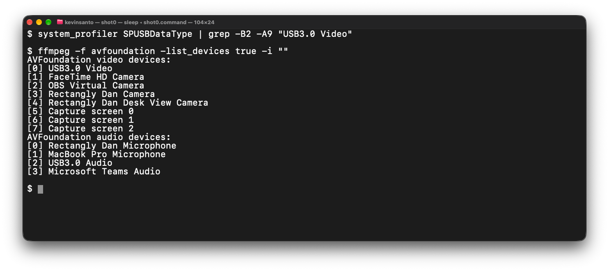
0x345F, product 0x2130, linked at SuperSpeed. That's an MS2130, the USB 3 big brother of the MS2109 that's inside every ten dollar capture stick.What is it actually sending?
So first I wanted to know what the camera was feeding the stick, and what the stick was doing to it. You can't ask the card what's coming in over HDMI (well, you can, see below, but I didn't know that yet). What you can do is look at the frames it gives you and work backwards.
Frame rate first. If the camera is sending 30p and the card is delivering 60, every frame has to show up twice. So I captured a few seconds at 1080p60 with ffmpeg and hashed every frame:
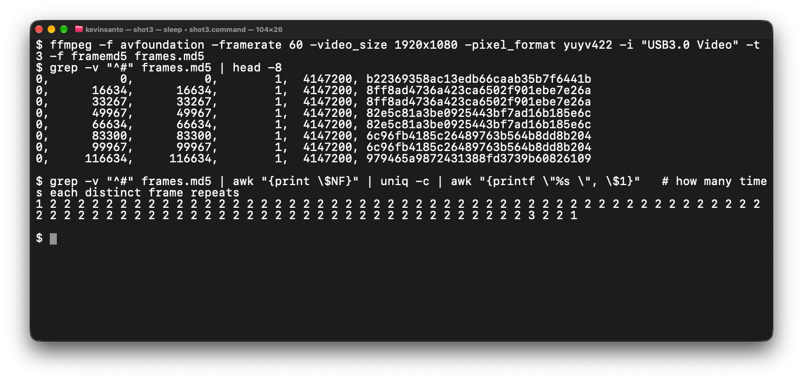
Then the 2560×1440 mode. Asked for 50 fps it delivered 32, and even those weren't 32 distinct frames. And here's the test I ended up leaning on for the rest of this project, because it's the one that actually tells you whether pixels are real: take a frame, squash it down through a lower resolution and back up to where it was, and measure how much changed. If a "1440p" frame goes through 1080p and comes back nearly identical, there was never anything in it that 1080p couldn't hold. The number is PSNR, higher means less was lost.
| Frame | Loss through 1080p | Loss through 1440p |
|---|---|---|
| The card's 2560×1440 mode | 43.3 dB | 49.9 dB |
| The card's 1080p, upscaled to 1440 myself, as a control | 44.2 dB | — |
The 1440p frame is within a dB of a frame I upscaled myself. It is an upscale.
And this is with the camera already in 4K mode. The card was taking a 4K signal, scaling it to 1080p somewhere inside, and then scaling it back up to 1440p so I could feel good about the dropdown. Thanks.
Naturally my next theory was EDID. That's the thing where an HDMI source reads a little table from the sink describing what it can accept, and only sends that. Maybe the stick was telling the camera "1080p please" and the camera was obliging. So I dumped the card's flash (more on how below) and decoded the EDID out of it. Nope: it advertises 2160p30, 2160p25, and even 4096×2160 in the HDMI vendor block. Then I found out the chip keeps its measured HDMI input size in a couple of RAM locations, and read those directly:
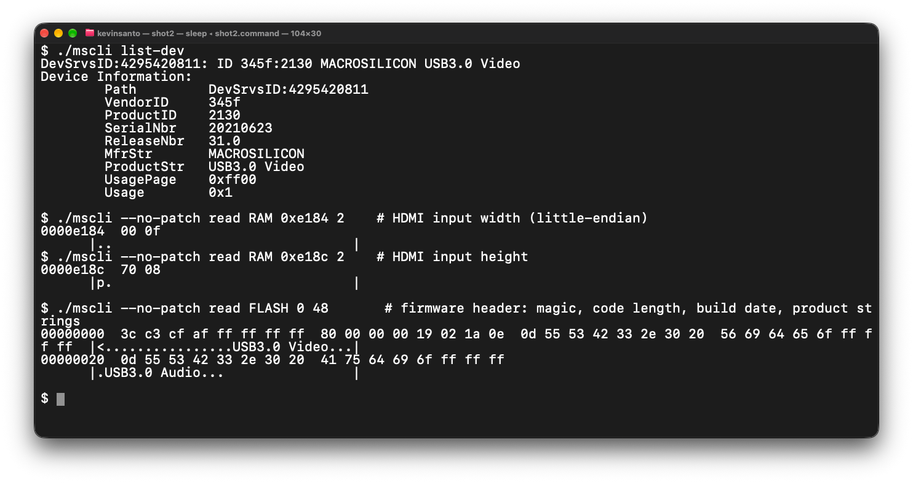
0x0f00 and 0x0870, little-endian: 3840 by 2160. The 4K was arriving. The card was throwing it away on purpose. (The last line is the firmware header, which comes up again below.)What I learned: the limit was inside the chip, not in the camera, the cable, or the EDID.
RTFM
There's no English datasheet for the MS2130, but there is a Chinese one, which I found and translated. It's the kind of document where every page says Confidential at the top, so I'm only going to show the three bits that matter.
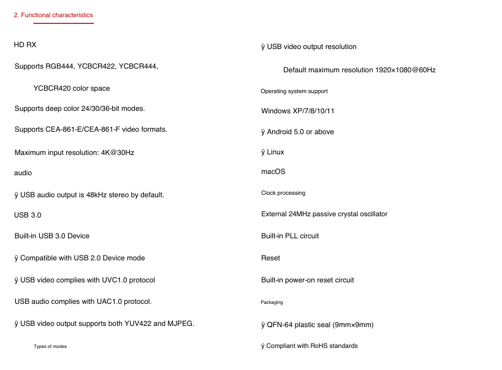
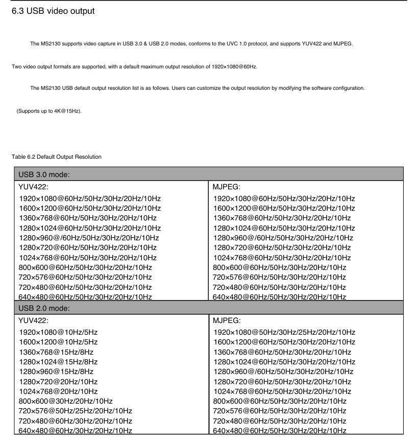
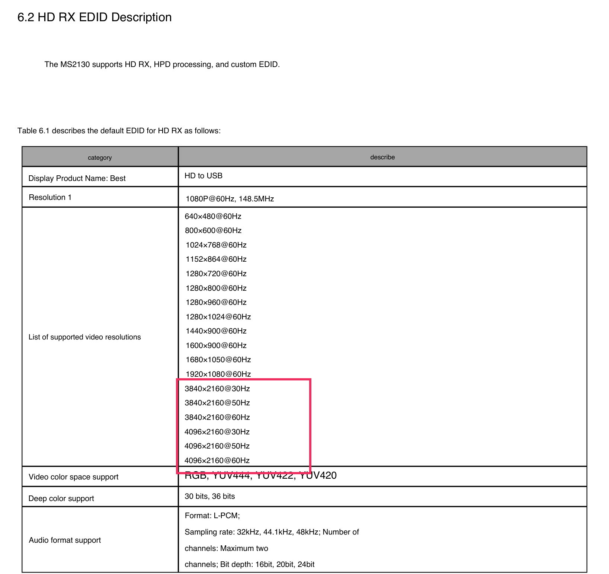
What I learned: the output resolutions are data, and the chip is rated for 4K out, just slowly.
Inside the firmware
The MS2130 has an 8051 core in it that boots from a 64 KB SPI flash on the stick, and it exposes a vendor HID interface over USB that the manufacturer's own tools use to read and write that flash. Bertold Van den Bergh reverse engineered that protocol for the whole MS21xx family and published ms-tools, which is a Go library and command line tool that can read chip RAM, read and write the flash, and run code on the 8051. The register reads in the screenshot above are his work; the addresses for the input width and height come from his notes. I read the flash twice, the dumps matched byte for byte, and that became my backup.
Inside the dump, exactly where you'd hope, are four USB video descriptor tables: USB 2 MJPEG, USB 2 uncompressed, USB 3 uncompressed, USB 3 MJPEG. Each one is the list of resolutions and frame rates you see in the OBS dropdown, as raw UVC frame descriptors. Mine had no 4K entry in any of them. The firmware also keeps a live copy of those tables in RAM, so the cheap experiment was obvious: patch the RAM copy to say 3840×2160 and reset the USB device. The write took, the chip re-enumerated, and the table came right back from flash. Fine. Flash it is.
This is where I got lucky, because somebody had already done the hard part. damnnfo's ms2130-firmware repo is a collection of firmware images pulled off real MS2130 sticks, along with the MacroSilicon Windows tool they used and notes on which version shows what. Here's the repo:
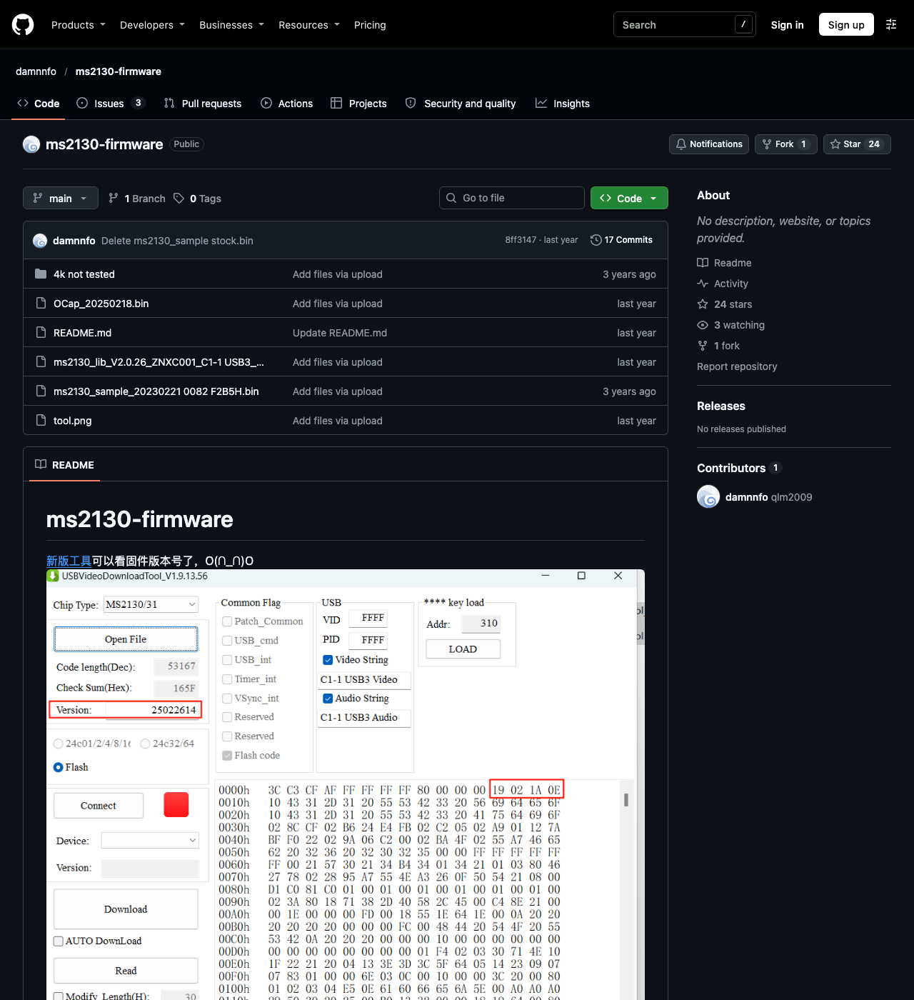
Two of those files are MacroSilicon's own library builds from early 2025, and both of them carry this in their USB 3 tables:
3840x2160 uncompressed 18 fps frame buffer 16,588,800 bytes
3840x2160 MJPEG 18 fpsWhy 18 and not 30? Eighteen frames a second of 4K YUY2 is about 300 MB/s, which is roughly what USB 3 bulk transfers will actually sustain. So the datasheet's "4K@15Hz" was conservative and the real firmware pushes it to 18. The repo also has a folder literally called "4k not tested" with a couple of hand-edited images, one of which fails its own checksum. I didn't flash that one.
I took the newer library build (V2.0.26, February 2025), copied my own stick's product strings into its header so OBS would keep seeing "USB3.0 Video" and not lose my sources, fixed the two checksums (a 16-bit sum of the header and a 16-bit sum of the code, both at the end of the image), and trimmed it to the length its header declares. That was the candidate.
What I learned: the 4K mode already exists in MacroSilicon's firmware. Nobody ships it because 18 fps looks bad on a box.
Flashing it
The write protocol is: erase the entire chip, then stream the image back in 6 bytes at a time over HID feature reports, about eleven thousand of them. The firmware fills a page buffer and commits it every 256 bytes. If a single report gets lost, every byte after it lands six positions early and the rest of the chip is garbage. And on a Mac, HID feature reports to this chip do get lost now and then. I measured it with read-only traffic, 2,048 reports a run:
| Condition | Failed reports |
|---|---|
| OBS streaming from the card at the same time | 15 of 2,048 |
| OBS closed, card idle | 4 of 2,048 |
So my first attempt with ms-tools "completed" and then failed verification. Reading the chip back showed my image with a six byte shift starting a few pages in, exactly one dropped report, and nothing but noise after it. The stick kept working, because the MS2130 copies the firmware to RAM at boot and runs from there, but if it had lost power at that moment it would have been dead. Do not unplug a card with unverified flash.
What worked was the UltraSemi web flasher, which is an unofficial reimplementation of MacroSilicon's tool that runs in Chrome over WebHID. It knows the image formats for the whole family, validates the checksums before it will write, and reads the chip back afterwards. With OBS closed it wrote, verified, and I read it back independently with ms-tools: byte for byte identical to the candidate. Here's the tool:
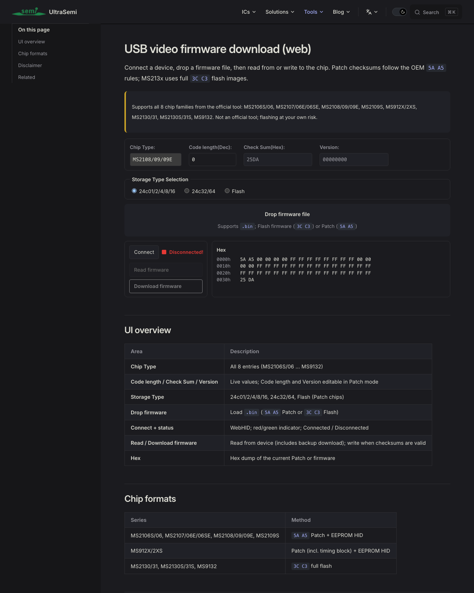
This can brick the stick. The flash is a separate SOIC-8 chip on the board, so a clip programmer gets you out of a dead USB path, but only if you saved a copy of your original firmware first. Read before you write, keep the file, close OBS, and don't unplug until the tool says it verified.
What I learned: the chip isn't fragile. The USB path on a Mac is, so give it nothing else to do while you write.
Did it work?
Replugged the stick and asked macOS for the format list again:
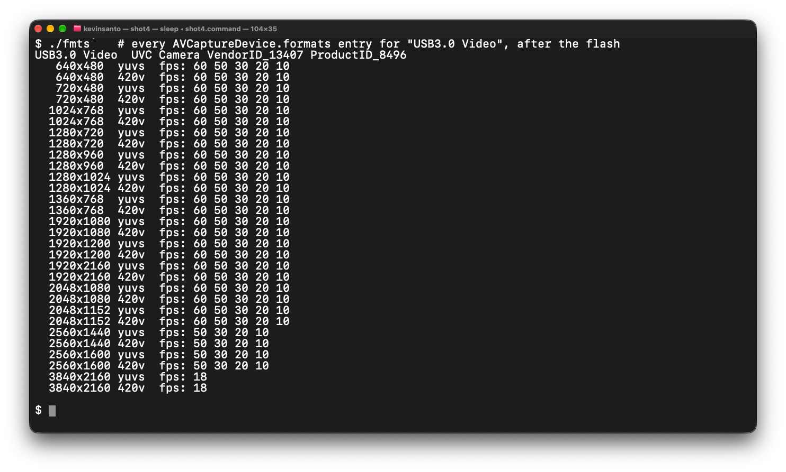
Then the real test, the same squash-and-measure trick from earlier, on frames from the new mode:
| Frame | Loss through 1080p | Loss through 1440p |
|---|---|---|
| The new 3840×2160 mode | 38.3 dB | 41.8 dB |
| The card's 1080p, upscaled to 4K, as a control | 44.2 dB | — |
| The card's 1440p, upscaled to 4K, as a control | 43.3 dB | 49.9 dB |
Six dB more loss than the control means six dB of real detail that 1080p can't carry. Eight dB past 1440p. That's 4K.
Here's what that looks like on an actual perfboard:
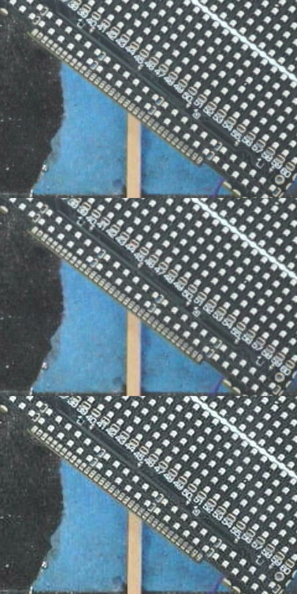
All 68 frames in a four second 4K capture were unique, so it's a genuine 18 distinct frames a second out of the camera's 30, with a slightly uneven cadence because 18 doesn't go into 30.
The width cap, and the mode that was there all along
Eighteen frames a second is fine for a desk cam and sad for anything that moves, so I went poking at the leftover modes hoping for 2K at 30. The 2560 wide ones are still upscales even on the new firmware. But that weird 1920×2160 at 30 entry, the one that looks like someone fat-fingered 1080, turned out to be the real deal: all 2160 lines of the 4K picture, at half width, at a full 30 fps.
| Frame | Loss through 1920×1080 |
|---|---|
| The card's 1920×2160 mode | 41.2 dB |
| A real 4K frame downscaled to 1920×2160 myself, as the reference | 41.6 dB |
| The card's 1080p upscaled to 1920×2160, as the control | 47.2 dB |
Within half a dB of a real 4K frame. So what the scaler in this chip actually can't do is output more than 1920 pixels of width. That's the whole limit. Every mode wider than 1920 is an upscale, every mode taller than 1080 is real, which gives you this:
| Mode | What you actually get | Verdict |
|---|---|---|
| 3840×2160 @18 (new firmware) | True 4K, 18 distinct frames a second | real |
| 1920×2160 @30 | Full 4K vertical detail at half width, true 30 fps. Stretch it 2× in OBS. | real |
| 1920×1080 @60 | Real 1080p, and noticeably sharper when the camera is sending 4K | real |
| 2560×1440, 2560×1600 @50 | 1080p scaled up, and it drops frames doing it | fake |
| 2048×1080, 2048×1152 @60 | 1080p with some extra columns | fake |
Here's what the 1920×2160 mode looks like before OBS stretches it back out:
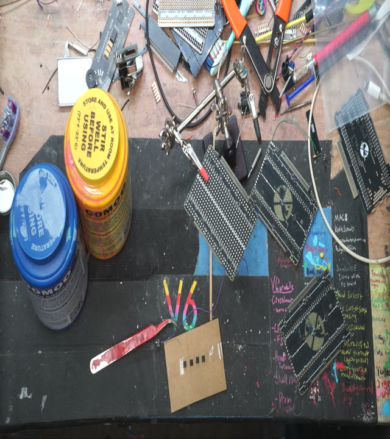
What I learned: the most useful mode on this card was in the stock firmware the whole time. I just needed to know to stretch it.
Do it yourself
- Check the chip.
system_profiler SPUSBDataTypeon a Mac,lsusbon Linux. You want vendor345f, product2130. An MS2109 is a different chip (USB 2, 1080p30) and none of this applies to it. - See what you have now. Open the resolution dropdown in OBS, or
ffmpeg -f avfoundation -list_devices true -i "". If 3840×2160 is already there, skip to step 6. - Back up your flash. Quit OBS and anything else using the card. Open the UltraSemi flasher in Chrome or Edge, connect the device, click Read, save the file somewhere you'll find it. This is your way back.
- Get a firmware with the 4K entry. From damnnfo/ms2130-firmware, take
ms2130_lib_V2.0.26…USB3_20250226.binorOCap_20250218.bin. Both have 3840×2160@18 in their USB 3 tables. Skip the "4k not tested" folder. If the flasher complains about the length, the file wants to be exactly0x30 + (the big-endian length at bytes 2 and 3) + 4bytes; mine was 53,219. If you care about OBS keeping your source names, copy bytes0x10to0x2Fof your backup (the product strings) into the same spot in the new image and let the flasher fix the checksums. - Flash it. Same tool, OBS still closed. Click Download firmware. Wait for it to say verified. If it fails, don't unplug, just try again. If it fails twice, write your backup back and try from a Windows or Linux machine, where the HID path is steadier.
- Replug and check. The dropdown should now have 3840×2160 at 18. Put the camera in its 4K HDMI output mode (on the A7S: movie mode, 4K Output Sel. = HDMI Only 30p). Pick 3840×2160@18 for detail, or 1920×2160@30 and stretch it for motion.
OBS settings that make it worth it
- Source: 3840×2160 at 18, or 1920×2160 at 30. Input format YUY2, video range Limited, colour space 709. For the squeezed mode: right-click the source, Transform, Stretch to screen, and set the scale filter to Lanczos.
- Canvas: 3840×2160, or 2560×1440 if you want 2K files. Integer FPS 18 for the 4K mode so nothing gets doubled, 30 for the squeezed one.
- Recording: the profile I'd been using was encoding 4K at 2.1 Mbps, which is a streaming preset, and it turned all that detail into mush. Use Apple VT HEVC at CRF around 65 to 70, or ProRes 422 on a P216 canvas if you're going to grade it, which keeps the card's 4:2:2 chroma. Plain MOV, not fragmented, if Premiere is involved.
Numbers for the nerds
Cadence: ffmpeg -f avfoundation -framerate 60 -video_size 1920x1080 -i "USB3.0 Video" -t 4 -f framemd5 -, then count runs of identical hashes. A 30p source through a 60 fps mode gives runs of exactly two.
Real detail: for a frame F at W×H and a candidate lower resolution w×h, take PSNR(F, up(down(F, w×h), W×H)), Lanczos both directions, luma only. Then do the same to a frame you know is an upscale and compare. Content the lower resolution can't carry shows up as extra loss. Six dB is not subtle.
Provenance: the tables on this page are from the measurement session on 28 September 2026. The photos were re-shot on 1 November because I didn't keep the originals; the same test on those frames gave 39.7 dB for 4K, 44.9 for the 1440p mode and 45.5 for the 1080p control. Same story within a dB.
HID error rate: ms-tools with a line of logging added to romExchangeReport, reading 8 KB of chip RAM four bytes a report and counting the failures.
Chip facts: MS2130, 8051 core, 64 KB external SPI flash. In the stock 2019 image the descriptor tables start at 0xC49E (USB 2 MJPEG), 0xC759 (USB 2 uncompressed), 0xCA9A (USB 3 uncompressed) and 0xCD37 (USB 3 MJPEG); the EDID is at 0xC1B5; the measured HDMI input width and height sit at 0xE184 and 0xE18C in XDATA.
Oh, and the time-lapse thing
Once the card was doing 4K I wanted it running all day, every day, without OBS open and without the macOS screenshot sound going off every few seconds. So I ended up with a little menu bar app that grabs a frame from the stick on an interval that speeds up when there's motion on the bench, and writes video that survives the laptop being shut. That got long enough to be its own page.
People and tools this leaned on:
damnnfo collected the MS2130 firmware images, including the 2025 builds with the 4K mode, and documented the official tool
Bertold Van den Bergh reverse engineered the MS21xx HID protocol and wrote ms-tools, which is how I read the flash and the chip's registers
UltraSemi built the web flasher (and an EDID editor for the same chips)
Sony ILCE-7S help guide, HDMI 4K Output
The MS2130 datasheet, Chinese, translated by me; the three cropped tables above are the parts that matter